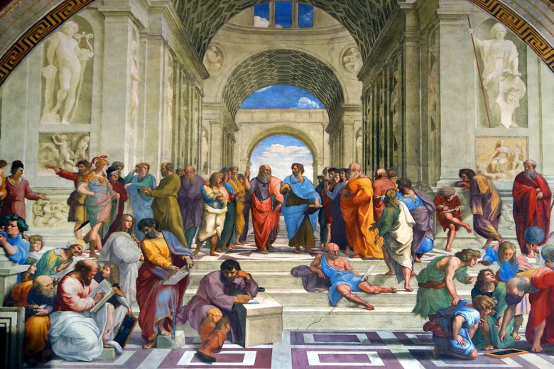

“We should not look at tradition and the past as something that can bind us.”
— Cicero, De Legibus
Our traditions are beautiful and deserve to be valued, but they should not keep us from progressing or updating our beliefs. It is completely understandable and natural to want to hold on to traditions. But if we are trying to hold on to them, nothing new will be created. When I say traditions, I’m not talking about cultural traditions, like holidays. What I mean is, our mindsets are based on the past, but we refuse to change because that’s the way it’s always been. We can’t be afraid of change though, and view deviation from tradition as disrespectful. Instead, we should use it as a guide, but not let it stop us from moving forward, because many innovations in history have been the result of opposing traditions.
A great example of this in history is the Renaissance. Before it occurred, the way people viewed the world was medieval and centered on religion. People began to focus on human potential, and the wonders that we can do, after old Greek and Roman knowledge were discovered. When the people researched in areas like art, science, and philosophy, they realized the great things that us humans can do. The Renaissance deeply impacted the way people have thought throughout history, and now.
Classical music had so many rules that people followed, when it came to structure and harmony. Beethoven didn’t follow those rules, adding emotion, and huge dynamics, which ended up shaping modern music. He did things crazy and unexpected, he was bold, and that changed the entire impact and history of music and art. What he did bewildered people at first, but people began to see him as a brilliant genius. This shows the great things that we can do when we are bold and go by our own beliefs, rather than tradition.
The reality is, when ideologies are changed, it’s not betrayal of tradition, but rather growth from it. The present is a gift, stronger than the future or the past, and if we think something should be changed, nothing can stop us from it. Whether it’s rules, or beliefs, the weakest reason to continue something is because it’s the way that it’s always been done. When we learn to use the past to grow and change, we will make progress. Thank you for reading Social Science 43, and have a brilliant day.